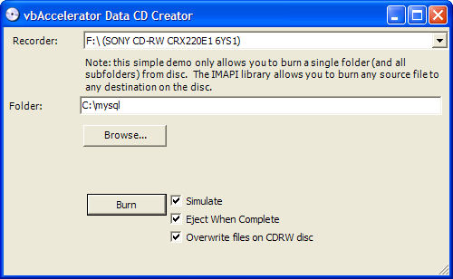

Data CD Writer (138K)
Data CD Writer (138K)
 27 Jun 2004
27 Jun 2004
First Posted
 Image Mastering API (IMAPI) Wrapper for .NET
Image Mastering API (IMAPI) Wrapper for .NET

Writing Data CDs
This article demonstrates how to use the IMAPI wrapper to burn data CDs (also known as "Joliet" format CDs). Sample code is provided in both C# and VB.
Writing Data CDs
Before you begin, note that this sample uses the IMAPI Wrapper for the CD burning functions. To run the sample, you will need to have acclImapiWrapper.DLL registered in the Global Assembly cache (GAC). If you place the DLL next to the executable in your Debug or Release directory then you will also be able to run (but you may need to change the project references to run in VS.NET).
Recording a data CD using IMAPI involves performing the following steps:
- Initialise the library by obtaining a DiscMaster instance, setting the active mastering format to Joliet to obtain a JolietDiscMaster instance to build up the staging image that will be burnt to disc, and setting the active recorder.
- Constructing a JolietDiscMasterStorage hierarchy to represent the files you want to burn to disc, and their filenames on disc.
- Instructing JolietDiscMaster to copy the files from the JolietDiscMasterStorage to the disc image, and then burning the CD.
During the last step, the DiscMaster will raise a number of events describing progress as the disc is staged or burnt, and also allows the burn to be cancelled.
I'll describe these steps briefly with VB.NET code examples. The C# code is very similar; refer to the downloads for details.
1. Initialising the Library
The only directly instantiable class in the IMAPI Wrapper is the DiscMaster object, from which all other classes can be obtained. This can be declared WithEvents in VB because you'll want to catch the progress and cancel events. Next, the recording mode is set by obtaining a JolietDiscMaster object. A reference to the returned object is kept as this is needed to stage the image (calling the JolietDiscMaster() again will result in a new instance being returned). Having done that, the list of recorders is populated into a ComboBox and the selected index set.
Private WithEvents discMaster As discMaster = Nothing
Private jolietDiscMaster As JolietDiscMaster = Nothing
Private Sub GetRecorders()
Dim ex As Exception
Try
discMaster = New DiscMaster()
jolietDiscMaster = discMaster.JolietDiscMaster()
Dim recorder As DiscRecorder
For Each recorder In discMaster.DiscRecorders
cboRecorder.Items.Add( _
New ComboRecorderWrapper(recorder))
Next
If (cboRecorder.Items.Count > 0) Then
cboRecorder.SelectedIndex = 0
End If
Catch ex
MessageBox.Show( _
Me, String.Format("Unable to initialise the IMAPI library {0}", ex), _
Text, MessageBoxButtons.OK, MessageBoxIcon.Stop)
If Not (discMaster Is Nothing) Then
discMaster.Dispose()
End If
End Try
End Sub
Private Sub cboRecorder_SelectedIndexChanged( _
ByVal sender As Object, _
ByVal e As System.EventArgs _
) Handles cboRecorder.SelectedIndexChanged
If (cboRecorder.SelectedIndex > -1) Then
Dim wrapper As ComboRecorderWrapper = cboRecorder.SelectedItem
discMaster.DiscRecorders.ActiveDiscRecorder = wrapper.DiscRecorder
End If
End Sub
As noted in the IMAPI Wrapper article, you must ensure that the Dispose method is called on the DiscMaster instance before ending your application. Failure to do this will result in any subsequent attempt to access the library failing with a "Stash In Use" error. To ensure this occurs, I've included an Application ThreadException handler, which is called in the unfortunate event of an untrapped exception in the code:
Public Sub New()
' ...
'Add any initialization after the InitializeComponent() call
AddHandler Application.ThreadException,
AddressOf application_ThreadException
Show()
Refresh()
GetRecorders()
End Sub
Private Sub application_ThreadException( _
ByVal sender As Object, _
ByVal e As ThreadExceptionEventArgs)
MessageBox.Show(Me, _
String.Format("An untrapped exception occurred: {0}.", _
e.Exception), _
Text, MessageBoxButtons.OK, MessageBoxIcon.Error)
Close()
End Sub
Protected Overrides Sub OnClosing( _
ByVal e As System.ComponentModel.CancelEventArgs)
' ....
'// Clear up:
MyBase.OnClosing(e)
Cursor.Current = Cursors.WaitCursor
sbrMain.Text = "Closing IMAPI interface..."
jolietDiscMaster.Dispose()
discMaster.Dispose()
Cursor.Current = Cursors.Default
End Sub
In this sample I'm exposing the stack trace of the exception directly; in a real application this would be bad practice and really the exception should be logged and a more descriptive message shown.
2. Constructing a JolietDiscMasterStorage hierarchy
The JolietDiscMaster instance exposes a RootStorage property, which returns a JolietDiscMasterStorage instance representing the root directory of the CD. You can add files and/or sub-directories to this object; sub-directories are also represented as JolietDiscMasterStorage objects. When adding a file, you specify the path of the file to copy from on disc and the name of the file in the directory to write it out to. Sub-directories just have a name. For the purposes of the sample, I just allow a directory to be added and optionally recursed:
''' <summary>
''' Adds a directory to the storage, optionally including
''' any subdirectories.
''' </summary>
''' <param name="path">Path to the directory to add</param>
''' <param name="recurse"><c>true</c> to include subdirectories,
''' <c>false</c> otherwise.</param>
Public Sub AddDirectory(ByVal path As String, ByVal recurse As Boolean)
Dim storage As JolietDiscMasterStorage = jolietDiscMaster.RootStorage
AddFilesToStorage(storage, path, recurse)
End Sub
Private Sub AddFilesToStorage( _
ByVal storage As JolietDiscMasterStorage, _
ByVal startPath As String, _
ByVal recurse As Boolean)
If (recurse) Then
Dim dir As String
For Each dir In Directory.GetDirectories(startPath)
Dim subStorage As JolietDiscMasterStorage = _
storage.CreateSubFolder(Path.GetFileName(dir))
AddFilesToStorage(subStorage, dir, recurse)
Next
End If
Dim file As String
For Each file In Directory.GetFiles(startPath)
storage.AddFile(file, Path.GetFileName(file))
Next
End Sub
Burning the Disc
With that done, creating the disc is easy: firstly any existing content in the image is cleared, then data is added using the AddData method of JolietDiscMaster and finally the disc is recorded using the DiscMasterRecordDisc method:
''' <summary>
''' Creates a data CD from the specified files
''' </summary>
''' <param name="simulate">Simulate CD burning</param>
''' <param name="ejectWhenComplete"><c>true</c> to eject the CD
''' tray when the burn is complete, <c>false</c> otherwise</param>
''' <param name="overwrite"><c>true</c> to overwrite existing files
''' on CDRW media, <c>false</c> otherwise</param>
Public Sub CreateCD( _
ByVal simulate As Boolean, _
ByVal ejectWhenComplete As Boolean, _
ByVal overwrite As Boolean
)
'// Ensure we don't have anything in the stage
discMaster.ClearFormatContent()
'// Stage the content
jolietDiscMaster.AddData(overwrite)
'// burn the disc
discMaster.RecordDisc(simulate, ejectWhenComplete)
'// Easy!
End Sub
Whilst burning is in progress, there are six events to respond to:
- AddProgress - raised as files are added to the image.
- PreparingBurn - raised once the image has been created and the CD is about to burnt.
- BlockProgress - raised as blocks are burnt to disc (a block is 2048 bytes).
- ClosingDisc - raised once the burn has completed and the CD (or session) is about to be closed.
- Complete - raised when the burn has completed.
- QueryCancel - raised whilst data is added to the image or burning is in progress. Setting the Cancel property of the event arguments will cancel the operation.
That is really all you need to do to create the disc; however, if you want to be able to respond to cancellations, or to show progress you will need to write your application so the burn runs on a background thread. The construction of the wrapper makes this very easy to do using BeginInvoke.
Using BeginInvoke for a Smooth User Experience
Buring a CD is typically a long operation. If you invoke a burn operation on the user-interface thread, then the application will appear to be locked up whilst the burn occurs. Under XP and above, a feature was added which allows the caption and border of the window to be unfrozen if XP detects that the application has been locked up for a significant length of time. After this point in .NET Framework applications, calls to update controls and so forth no longer have any effect.
Therefore we want a way to invoke the CD burn on a background thread. Since the IMAPI wrapper makes a call to check whether the burn is cancelled at frequent intervals, and this is done through an event, there is also a safe way to cancel a burn operation at any time.
Any method in a class can be invoked asynchronously in .NET by creating a delegate for it. Once you have done this, the compiler is responsible for automatically creating three methods for the delegate:
- The Invoke method, which has the same parameters and return value as the delegate and allows the method to be called synchronously.
- The BeginInvoke method, which is the same as Invoke except it adds two more parameters: an AsyncCallback delegate and an object to hold state.
- The EndInvoke method, which the same return value as the delegate, any ref or out parameters and an extra parameter holding an IAsyncResult object.
This makes asynchronous invocation easy. There are four coding steps:
- Declare a delegate for the method you want to call asynchronously.
- Write a completion event handler for the method you want to call, which will be called when the method completes.
- Create an AsyncCallback handler and connect it to your completion event handler.
- Invoke the delegate's method asynchronously using BeginInvoke.
Here's the code for doing this in VB and C#. Unsurprisingly the code is very similar; the only real difference being VB's odd use of AddressOf to refer to delegates. In this case the method I want to call is the CreateCD method implemented in my DataCDCreator class. This method takes three boolean parameters (for simulate burn, eject when complete and overwrite) and has no return value:
VB Code for Asynchronous Invocation
''' <summary>
''' Delegate representing the CreateCD method
''' </summary>
Public Delegate Sub CreateCDDelegate( _
ByVal simulate As Boolean, _
ByVal ejectWhenComplete As Boolean, _
ByVal overwrite As Boolean)
Private creator As DataCDCreator = Nothing
Private createCDHandler As CreateCDDelegate = Nothing
' Asynchronously invoke the creator
creator = New DataCDCreator(discMaster, jolietDiscMaster)
creator.AddDirectory(txtFolder.Text, True)
createCDHandler = AddressOf creator.CreateCD
Dim callback As AsyncCallback = AddressOf createCD_Complete
Dim ar As IAsyncResult = createCDHandler.BeginInvoke( _
simulate, ejectWhenComplete, overwrite, callback, Nothing)
''' <summary>
''' Called when CD creation completes
''' </summary>
''' <param name="ar">Result of method call (none)</param>
Private Sub createCD_Complete(ByVal ar As IAsyncResult)
' NB should surround with try - catch - end try
SetApplicationMode(False)
createCDHandler.EndInvoke(ar)
End Sub
C# Code for Asynchronous Invocation
/// <summary>
/// Delegate representing the CreateCD method
/// </summary>
public delegate void CreateCDDelegate(
bool simulate,
bool ejectWhenComplete,
bool overwrite);
private DataCDCreator creator = null;
private CreateCDDelegate createCDHandler = null;
// Asynchronously invoke the creator
creator = new DataCDCreator(discMaster, jolietDiscMaster);
creator.AddDirectory(txtFolder.Text, true);
createCDHandler = new CreateCDDelegate(creator.CreateCD);
AsyncCallback callback = new AsyncCallback(createCD_Complete);
IAsyncResult ar = createCDHandler.BeginInvoke(
simulate, ejectWhenComplete, overwrite, callback, null);
/// <summary>
/// Called when CD creation completes
/// </summary>
/// <param name="ar">Result of method call (none)</param>
private void createCD_Complete(IAsyncResult ar)
{
// NB should surround with try-catch
SetApplicationMode(false);
createCDHandler.EndInvoke(ar);
}
More Ideas
The sample application here is rather trivial, in that all it allows you to do is to copy an existing directory to the CD. However, that's not an actual limitation, since when you create the storage you can specify that any file is mapped to a different path and or file on the destination CD. A more complete application would allow you to drag files from any location to the CD, and rename them if possible.
You could use this code to create an almost unattended CD writer (the only thing you need to do is to ensure suitable media is available in the drive) rather than having a UI.
Conclusion
This article demonstrates how to create Data CDs from VB or C# using the IMAPI Wrapper. Although the sample has a simple UI it performs all of the major operations you'll need to perform and should be easy to extend.